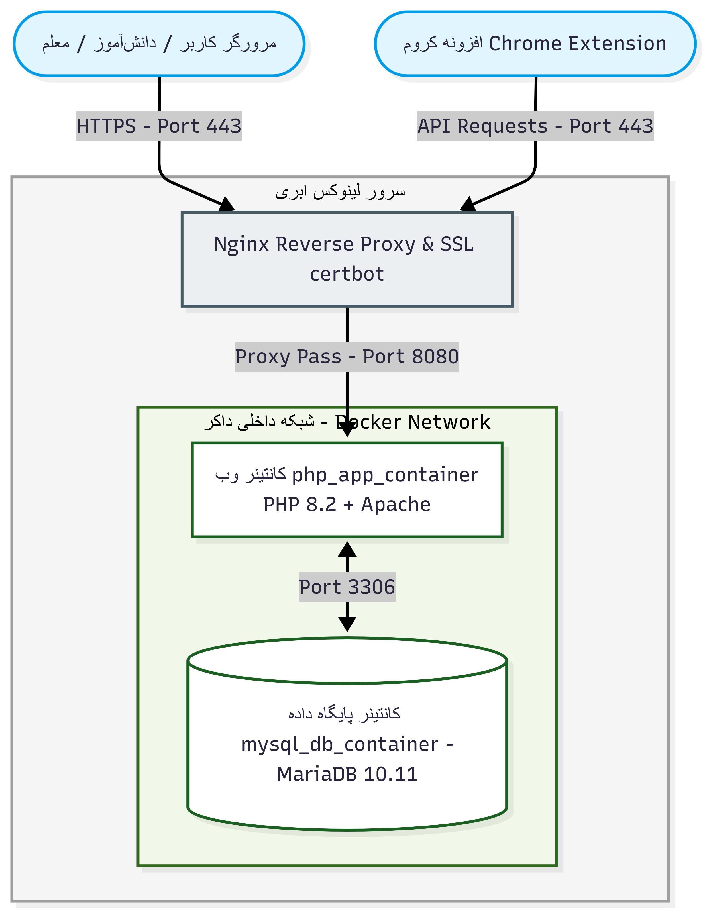

- نام و نام خانوادگی طراح: محمدامین مدنی محمدی
- مرکز آموزشی: دبیرستان استعدادهای درخشان شهید باهنر ۳ کرج (سمپاد)
- محور و گرایش جشنواره: برنامهنویسی و سیستمهای نرمافزاری کاربردی
- عنوان تجاری و فنی اثر: ZeroLMS (Zero Learning Management System)
- دامنه و بستر میزبانی: bahonarkaraj.ir
- نسخه نرمافزار: v2.8 Stable Enterprise
- پشته فناوری هسته (Tech Stack): PHP 8.2 (OOP), MariaDB 10.11, Docker, Nginx, JS ES6
- نوع زیرساخت استقرار: Docker Containerization (Multi-Service DevOps)
- مستندات سورسکد: مخزن گیت محلی همراه با فایل README کامل در ریشه پروژه
- تاریخ ارزیابی میدانی: سال تحصیلی ۱۴۰۴ - ۱۴۰۵
اکثر مدارس و مراکز آموزشی کشور در استفاده از سامانههای مرسوم (مانند Moodle، سامانه شاد یا پلتفرمهای سنتی وب) با سه چالش بنیادین مواجه هستند: ۱. سنگینی و افت شدید عملکرد در ترافیک بالا، ۲. فقدان ابزارهای خودکارسازی مدیریت تحصیلی (مانند چیدمان هوشمند برنامه درسی بدون تداخل دبیران)، و ۳. عدم یکپارچگی ابزارهای کمکآموزشی نوین (مانند هوش مصنوعی و ثبت حضور و غیاب فیزیکی). سامانه ZeroLMS با هدف حذف سربارهای ساختاری (Zero Overhead) طراحی و توسعه یافته است.
| معیار ارزیابی | سامانه مودل (Moodle) | سامانههای سنتی مدارس | سامانه نوآورانه ZeroLMS |
|---|---|---|---|
| معماری و نحوه استقرار | نیاز به منابع سختافزاری بالا و سرور حجیم | هاستهای اشتراکی و محدود بدون ایزولاسیون | کانتینربندی سبک داکر (Docker Isolated DevOps) |
| تولید برنامه هفتگی مدرسه | فاقد موتور حل تداخل کلاسی | چیدمان دستی با احتمال خطای انسانی مکرر | الگوریتم حل ارضای قید (CSP) در کمتر از ۵۰۰ میلیثانیه |
| دستیار هوش مصنوعی | نیازمند پلاگینهای پیچیده ثالث خارجی | فاقد دستیار تعاملی | استریمینگ بلادرنگ (SSE) با پرامپتینگ هدایتگر سقراطی |
| حضور و غیاب و اعلان سختافزاری | ثبت دستی در صفحه وب | سیستمهای سنتی بدون وبهوک | پشتیبانی از کارت RFID + اکستنشن کروم با صدای معلم |
| سرعت پاسخدهی (Lighthouse) | میانگین ۴۰ الی ۶۰ به دلیل اسکریپتهای حجیم | متوسط (۵۰ الی ۷۰) | نمره ۹۸ در شاخص پرفورمنس رسمی گوگل |
زیرساخت سرور بر پایه تفکیک کامل سرویسها پیادهسازی شده است. پکتهای شبکه ابتدا توسط کانتینر معکوس Nginx در پورت امن ۴۴۳ همراه با گواهی معتبر SSL دریافت میشوند. سپس پردازش کدهای سمت سرور به کانتینر PHP 8.2 ارسال شده و تراکنشهای دادهای منحصراً در شبکه ایزوله داخلی (Docker Bridge Network) بدون دسترسی مستقیم از اینترنت به کانتینر MariaDB 10.11 منتقل میگردند.

شاخصهای امنیتی معماری:
- عدم افشای پورت پایگاه داده: پورت پایگاه داده فقط در شبکه کانتینرها در دسترس است.
- مکانیزم CSRF Token: در کلیه فرمها و درخواستهای متد POST توکن تصادفی ۳۲ بایتی اعتبارسنجی میشود.
- استفاده ۱۰۰٪ از Prepared Statements: پیشگیری کامل از حملات SQL Injection.
- هش BCRYPT برای کلمات عبور: ذخیره نکردن کلمه عبور به صورت خام در دیتابیس.
یکی از بزرگترین گرههای اداری مدارس کشور در آغاز سال تحصیلی، چیدمان برنامه درسی است. با افزایش تعداد کلاسها و دبیران مشترک، تعداد حالات ممکن به صورت فاکتوریلی رشد کرده و چیدمان دستی ساعتها زمان میبرد. در ماژول ZeroSchedule، این موضوع به صورت یک مسأله استاندارد Constraint Satisfaction Problem (CSP) مدلسازی شده است:
قیود سخت (Hard Constraints):
- ۱. عدم همپوشانی دبیر: هیچ مدرسی نمیتواند در یک زنگ خاص در دو کلاس متفاوت تخصیص یابد.
- ۲. سقف ساعات مصوب: تعداد زنگهای هر درس در هفته دقیقاً معادل بودجهبندی استاندارد آموزش و پرورش باشد.
- ۳. ظرفیت زنگهای کلاسی: در هر اسلات زمانی (۵ روز، هر روز ۶ زنگ = ۳۰ زنگ هفتگی)، حداکثر یک درس برای هر کلاس ثبت شود.
قیود نرم و بهینهسازی (Soft Constraints):
- ۱. پخش متعادل دروس سنگین: عدم قرارگیری دو زنگ متوالی درسهای دشوار (ریاضی/فیزیک) در ساعات پایانی روز.
- ۲. حداقلسازی پنجرههای خالی دبیران: تجمیع ساعات حضور دبیر در روزهای کاری مشخص.
- ۳. توزیع پیوسته دروس در هفته: اجتناب از انباشت ساعتهای یک درس خاص در یک روز.
زمان اجرای الگوریتم بر حسب تعداد کلاسها (بنچمارک عملی):
برخلاف چتباتهای عمومی که پاسخ مستقیم سوال را به دانشآموز ارائه میدهند و مانع یادگیری عمیق میشوند، هسته هوش مصنوعی ZeroLMS بر پایه روش سقراطی (Socratic Tutoring) هدایت میشود. سیستم با طرح پرسشهای گامبهگام و راهنمایی مفهومی، دانشآموز را تشویق میکند تا خودش به راه حل مسئله دست یابد.
سامانه به دستگاه سختافزاری کارتخوان RFID مستقر در ورودی مدرسه متصل است. با نزدیک کردن کارت هوشمند دانشآموز، کد یکتای سختافزاری دریافت شده و بلافاصله وضعیت تردد (ورود، خروج، تاخیر) در جدول attendance پایگاه داده ثبت میشود.
همچنین برای اولین بار در سیستمهای مدیریت یادگیری، یک افزونه اختصاصی مرورگر (Chrome Extension Manifest v3) توسعه داده شده است. این افزونه با استفاده از توکن رمزنگاریشده اختصاصی هر کاربر، بدون نیاز به باز بودن برگه وبسایت، اطلاعیهها، تکالیف فوری و هشدارهای دبیر را با صدای ضبطشده معلم روی دسکتاپ پخش میکند.
مشخصات افزونه و وبهوک:
- معماری افزونه: Chrome Extension Manifest v3
- روش احراز هویت: هش توکن اختصاصی ۳۲ بایتی (SHA-256)
- فرکانس کارتهای RFID: فرکانس استاندارد 13.56MHz Mifare
- هماهنگی صوتی: پخش اعلان با صدای معلم جهت ایجاد انگیزه آموزشی
پایگاه داده MariaDB شامل ۳۱ جدول ساختاریافته در فرم نرمال سوم (3NF) است. این ساختار از بروز افزونگی دادهها (Data Redundancy) جلوگیری کرده و تضمین میکند عملیاتهای حساس با رعایت اصول تراکنشی ACID اجرا شوند.

دستهبندی جداول سامانه:
- کاربران و اعتبارسنجی:
users,teachers,cards,logs - مدیریت آموزشی:
classes,classcourses,classcourseteachers,notes - تکالیف و ارزیابی:
homeworks,homework_submissions,scores - آزمونساز آنلاین:
exams,exam_questions,exam_answers - فرمساز داینامیک:
forms,form_fields,form_responses - گیمیفیکیشن:
badges,user_badges,user_points - هوش مصنوعی:
aichats,aimessages
توزیع جداول بر اساس ماژولهای سامانه:
بررسی عملکرد صفحات با ابزار رسمی Google Lighthouse نشاندهنده بهینهسازی دقیق کدهای فرانتاند و بکاند، رعایت کامل استانداردهای سئو، و زمان پاسخدهی کمتر از ۰.۸ ثانیه برای لود صفحات است:
استقرار چند کانتینری
هر مدرسه یا منطقه آموزشی میتواند در قالب کانتینرهای مستقل در کمتر از ۳ دقیقه با یک دستور Docker Compose راهاندازی شود.
کاهش ۹۰ درصدی هزینهها
با مصرف حداقلی رم (کمتر از ۱ گیگابایت برای ۵۰۰ دانشآموز آنلاین همزمان)، هزینه سرور برای مدارس به شدت کاهش مییابد.
بهروزرسانی پیوسته (CI/CD)
قابلیت ارتقا و تزریق ماژولهای جدید بدون از کار افتادن سرویس و با حفظ دائمی امنیت اطلاعات دانشآموزان.
محمدامین مدنی محمدی
دانشآموز پایه دهم دبیرستان استعدادهای درخشان شهید باهنر ۳ کرج (مرکز نخبگان استان البرز). فعال در حوزه توسعه وب فولاستک، معماری سیستمهای توزیعشده، لینوکس و دوآپس، و پژوهشگر هوش مصنوعی کاربردی در آموزش.